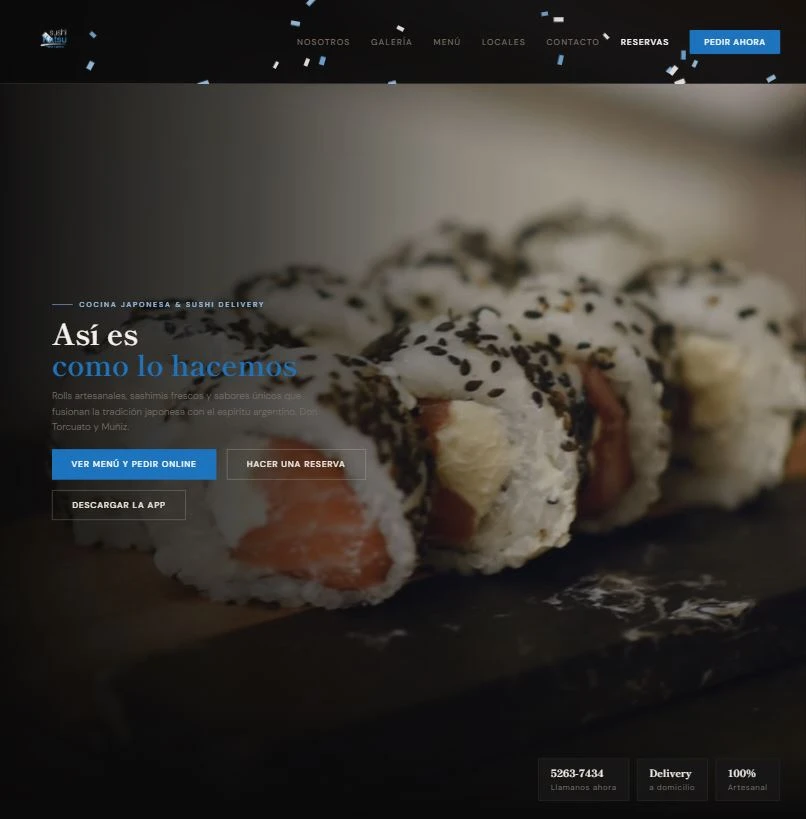

Sushi Katsu
Restaurante · Don Torcuato / San Miguel
Cocina japonesa con delivery en dos locales. Menú online con carrito, selección de modalidad obligatoria antes del pago, reservas por WhatsApp y video hero optimizado con Cloudinary.
HTMLCSSJavaScriptCloudinary
